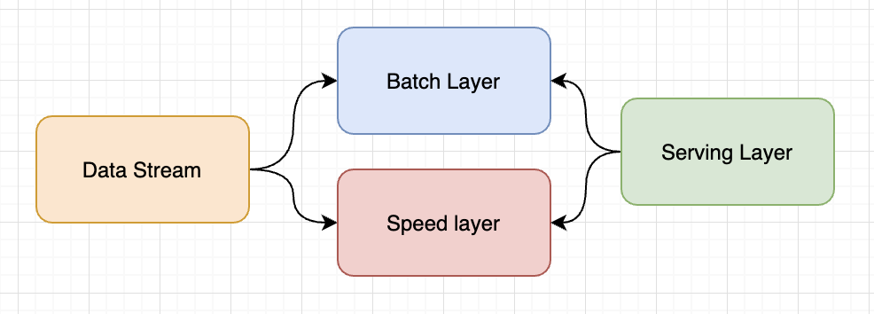
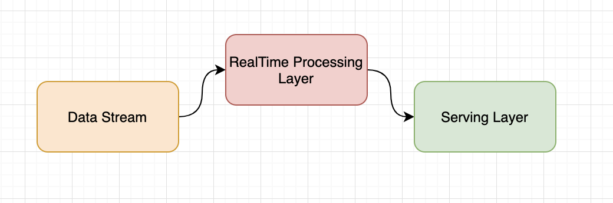
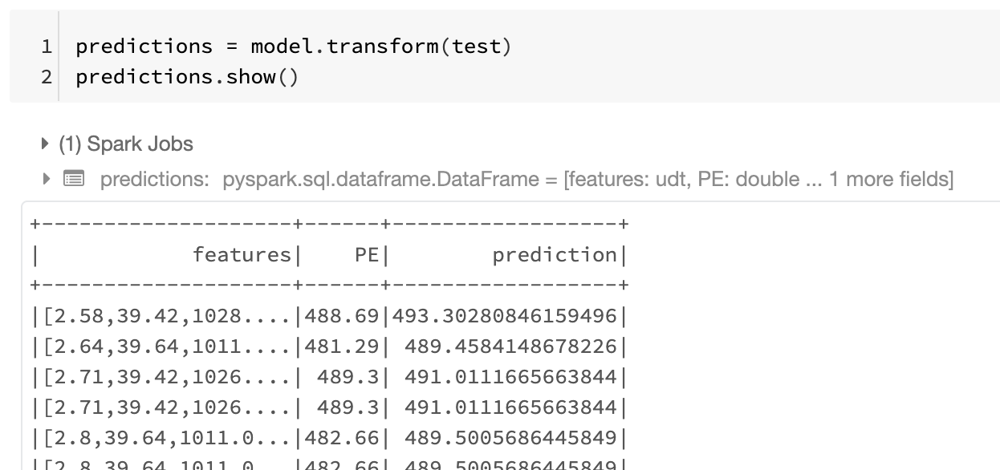

A modern power plants generate an enormous amount of data, with the ever growing number of high frequency sensors, some of the applications of this data are : the protection against problems induced by combustion dynamics for example, and help improve the plant heat rate, and optimize power generation.
If we take a sensor that monitors the combustion process at a frequency of 25kHz it could generate up to 10Gig bytes of data a day, scale that to hundreds ( sometimes thousands ) and you will end up with something in the order of terabytes a day.
In the energy industry, independent power producers with big fleet of generation units are gathering massive quantities of data from their plants, whether it’s about reporting and dashboarding, or making recommendation in realtime to improve the generation, or simply alerting about a potential issue, realtime processing of streaming data is and should be an integral part of this data pipeline.
Kappa vs Lambda Architecture :
generally there are two approaches to realtime streaming, lambda and kappa architectures
lambda architecture :
Lambda architecture is a way of processing massive quantities of data (i.e. “Big Data”) that provides access to batch-processing and stream-processing methods with a hybrid approach. Lambda architecture is used to solve the problem of computing arbitrary functions. The lambda architecture itself is composed of 3 layers : Batch, Speed, and Serving.
batch layer manages historical data and handles all the computation and transformations on the data including machine learning inference
the speed layer is supposed to handle all low-latency and realtime queries and

Kappa Architecture :

The Kappa Architecture is used for processing streaming data. The main premise behind the Kappa Architecture is that you can perform both real-time and batch processing, especially for analytics, with a single technology stack. It is based on a streaming architecture in which an incoming series of data is first stored in a messaging engine like Apache Kafka. From there, a stream processing engine will read the data and transform it into an analyzable format, and then store it into an analytics database for end users to query.
Both architectures are also useful for addressing “human fault tolerance,” in which problems with the processing code (either bugs or just known limitations) can be overcome by updating the code and running it again on the historical data. The main difference with the Kappa Architecture is that all data is treated as if it were a stream, so the stream processing engine acts as the sole data transformation engine.
Example :
if you want to take a look at the code first, here are the links to the notebook and kafka producer code.
databricks notebook
Code : git repo
To to demonstrate realtime processing I will deploy a linear regression model that predicts the power generation in MWs based on sensors data.
I will be using the following Combined Cycle Power Plant Data Set , the dataset collects 9568 datapoints over 5 years ( 2006 to 2011) and these columns :
Features consist of hourly average ambient variables
- Temperature (T) in the range 1.81°C and 37.11°C,
- Ambient Pressure (AP) in the range 992.89-1033.30 milibar,
- Relative Humidity (RH) in the range 25.56% to 100.16%
- Exhaust Vacuum (V) in teh range 25.36-81.56 cm Hg
- Net hourly electrical energy output (EP) 420.26-495.76 MW

I will use these frameworks :
Kafka ( confluent ) : as an upstream data source
Spark Structured Streaming as processing engine
Sparl.Ml to train the model

Data Exploration :
Histogram of all features and labels

Training :
After downloading the data, we select the features columns, we create an assembler Vector to gather all the features, then split the data to test and train, create Linear Regression – using featuresCOl and LabelCol
after the model is trained, we measure Model metrics ( MAE. RMSE, R2 )
%python
from pyspark.ml.feature import VectorAssembler
from pyspark.ml.regression import LinearRegression
#After downloading the data, we select the features columns
feature_columns = df.columns[:-1]
# Create an assembler Vector
assembler = VectorAssembler(inputCols=feature_columns,outputCol="features")
df2 = assembler.transform(df)
df_train = df2.select("features","PE")
# Split the data to test and train
train, test = df_train.randomSplit([0.7, 0.3])
# Create Linear Regression - using featuresCOl and LabelCol
lr = LinearRegression(featuresCol="features", labelCol="PE")
model = lr.fit(train)
#Measure Model metrics
evaluation_summary = model.evaluate(test)
#evaluate
print(evaluation_summary.meanAbsoluteError)
print(evaluation_summary.rootMeanSquaredError)
print(evaluation_summary.r2)
Prediction on test set :

the transform method creates an extra column called prediction.
Predictions on streaming data
Power plants like combined cycle gas plants or coal or nuclear tend to generate an enormous amount of sensor data.
The Lambda architecture approach is to collect, process, clean the data and store it in a datalake waiting for the next batch to run the inference on it, the second approach (kappa architecture) is to run the model on the data while as it’s streaming. In this example we will use the following these main frameworks to run realtime predictions :
- Kafka : a data streaming framework allowing producers to write the data upstream and consumer to read downstream
- Spark SQL : Spark SQL is a Spark module for structured data processing. It provides a programming abstraction called DataFrames and can also act as a distributed SQL query engine.
- Spark Structured Streaming : scalable fault tolerant streaming processing engine built on top of SparkSQL provides the possibility to run transformation and ML models on streaming data
Here is the code to initiate a read stream from a kafka streaming cluster running on Host : plc-4nyp6.us-east-1.aws.confluent.cloud:9092
the ReadStream() method create a dynamic dataframe, that will hold values captured from kafka stream over time.
dfs = spark.readStream .format("kafka") .option("includeHeaders", "true") .option("kafka.bootstrap.servers", "plc-4nyp6.us-east-1.aws.confluent.cloud:9092") .option("subscribe", "ccgt_sensors") .option("startingOffsets", "latest") .option("kafka.security.protocol","SASL_SSL") .option("kafka.sasl.mechanism", "PLAIN") .option("kafka.sasl.jaas.config", "kafkashaded.org.apache.kafka.common.security.plain.PlainLoginModule required username=\"HXKG22IOPJ2RUDEJ\" password=\"zZLvDdDcBYFkolkaQJdvxrfyUuU/ju/egbgxD3+1GqH5g5mQ5ShhQ0PLh59sSv+xG\";") .load()
dfs2 = dfs.selectExpr("CAST(value AS STRING)")
this will read stream of input values as a string :

at this point we need to split the string to an array of strings based on the comma delimiter , and cast the list as Array<double>
Since model expect a vector of values to run the transformation ( prediction ) , I created a UDF (User Defined Function) to convert list of doubles to a vector using Vectors.dense() method
#cast string inouts as an array of doubles
values = dfs2.select(
split(dfs2.value, ",").cast("array<Double>").alias("inputs")
)
print(test.printSchema)
print(values.printSchema)
# create UDF to convert features list to
conv_vec = udf(lambda vs: Vectors.dense([float(i) for i in vs]), VectorUDT())
now that we have stream input data as a vector we can run predictions :
def predict_mw(sdf): mw = model.transform(sdf) return mw df_out = predict_mw(new_df) display(df_out)
the result is a realtime prediction of MWs generated by the power plant based on the input features